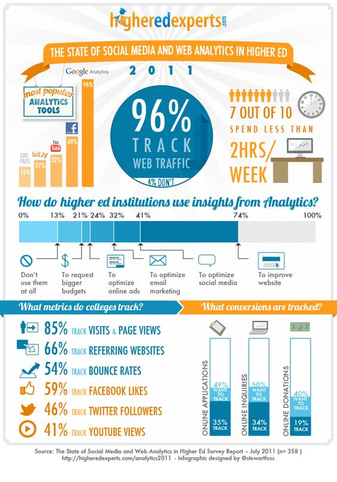
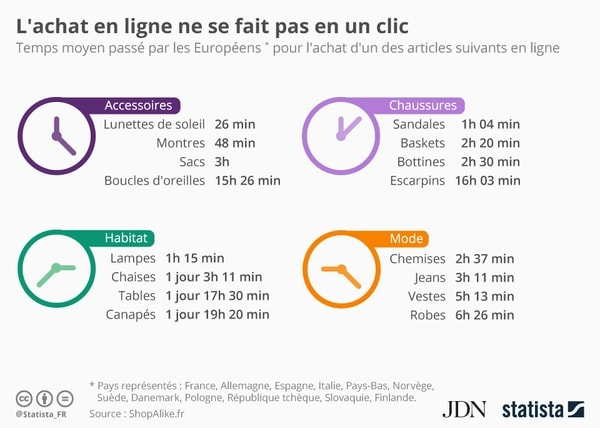
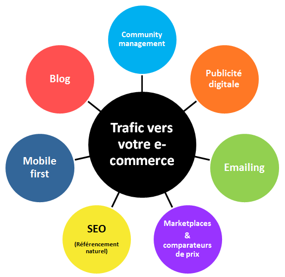
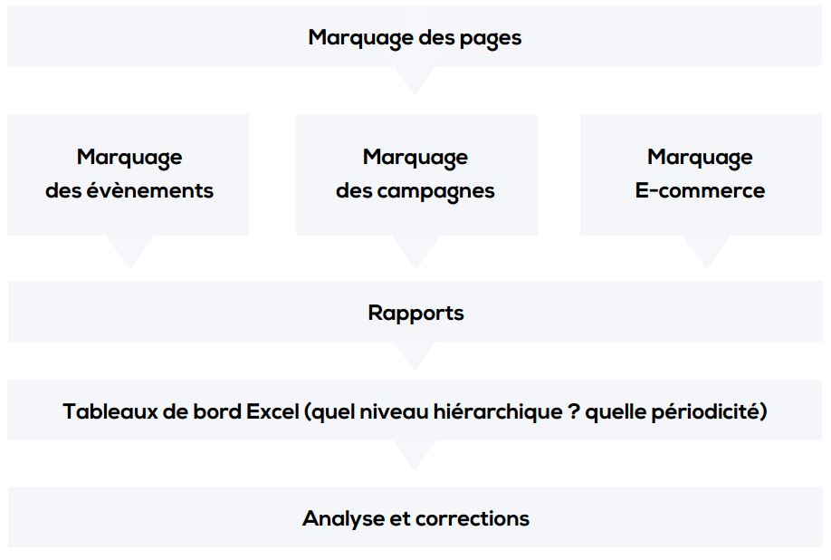

Xavier DENEUX
Lead developer
bit.ly/cours-webanalytics
(http://slides.xavierdeneux.fr/webanalytics)
Contact:
@xavierdeneux
www.xavierdeneux.fr
Dans le web depuis presque 10ans
#photo, #running, #entrepreneur, #autodidacte, #IoT, #3dprinting.
Bientôt #freelance.
Expérience
- 8 ans de développement web
- 3 ans en tant que gérant d'un e-commerce
- 4 ans de consulting
"Le Web Analytics regroupe la mesure, la collecte, l’analyse et la présentation de données provenant d’Internet utilisées pour optimiser un site web, un site mobile ou une application."
Définition version courte
- Définir
- Mesurer
- Agir
- Travail permanent
- Nécessite une bonne expertise
- Transversal

At the beginnnig...
Apparu au début des années 2000
- Rôle: Mieux comprendre les comportements utilisateurs
- Très peu d'indicateurs disponibles
- Faible fiabilité des données
Un outil indispensable aujourd'hui
- Optimiser un site, une app, un objet conecté... Plusieurs objectifs:
- Croissance des revenus
- Réduction des coûts
- Augmenter la satisfaction client
- Des KPI toujours plus riches
- Une meilleur fiabilité
- Une étape obligatoire dans le webmarketing
Transversalité
- Dirigeants
- Equipes marketing
- Equipes informatiques
- Equipes d'analystes
- Equipes commerciales et service client
Ce qui gravite autour des web analytics
- Search Engine Optimisation (SEO)
- Search Engine Advertising (SEA) : Adwords, Facebook Business, TwitterAds...
- Ces deux domaines forment le "Search Engine Marketing" (SEM)
Plusieurs modèles selon les types de site
- Sites d'informations
- Sites médias
- Sites de génération de piste de vente
- Sites e-coommerce
- Sites de service client
Sites d'information
Aucun objectif direct de vente.
Evaluer les visites, utilisation des contenus mis à disposition...
- Instutions, gouvernements
- Offices de tourisme...
- Branding
Site médias
Le but est essentiellement de vendre de la publicité, la plus ciblée possible.
- Journaux en ligne
- Sites de contenu: blogs
Sites de génération de piste de vente
Récupérer des utilisateurs qualifiés. La qualité avant la quantité.
On laisse l'user faire la démarche, les "curieux" sont écartés.
- Certains sites de marque (auto, immo)
Sites e-coommerce
Analytics indispensables! Connaitre sur le bout des doigts le client et ses comportements pour mieux lui vendre.
- Beaucoup de métriques
- Calcule de ROI
- Transverse: publicités, communication
- Le tunnel d'achat
Sites de service client
Rendre service au client. Répondre efficacement et rapidement à ses questions
- Mesurer l'efficacité du service
- Mesure de la satifaction client
- = Augmenter l'UX!
Les différents types d'analyse
Analyse comportementale
- Que font vos visiteurs
Les différents types d'analyse
Analyse de la motivation des internautes
- Pour quelle raison viennent t-ils chez-vous?
Les différents types d'analyse
Analyse concurentielle
- "La concurrence est à un clic"
Les différents types d'analyse
Analyse medias sociaux
- Que font les visiteurs sur les réseaux?
- Quelle est votre image sur les réseaux?
Les différents types d'analyse
Analyse mobile
- Utilisation du site mobile
- Utilisation d'une app
Les différents types d'analyse
Analyse multi-canal
- Intégrer les process marketing classiques
La segmentation
Coeur du webanalytics, aspect indispensable dans le w-a.
Consiste à : découper, filtrer les données pour en extraire de la valeur
- Source de trafic
- Age
- Moyens utilisés pour venir sur le site
- ...
Les KPI
En anglais Key Performance Indicator, véritables aides à la décision.
Un KPI intéréssant est un KPI pour lequel on peut entreprendre des actions pour l'améliorer.
Trois types principaux de KPI
- Le KPI principal associé au but du site Internet
- Les KPIs stratégiques associés aux objectifs stratégiques
- Les KPIs opérationnels associés aux objectifs opérationnels
Une valeur satisfaisante d’un KPI opérationnel doit influencer positivement la valeur d’un objectif stratégique.
Bien choisir ses KPI (1/2)
- Cohérence dans la stratégie marketing globable
- Des référents pour chaque KPI
- Prédiction de performances
- Avoir des levier d'actions pour le faire évoluer
- La qualité plutôt que la quantité
Bien choisir ses KPI (2/2)
- Des KPI simples et compréhensibles
- Doit être vecteur de changement futur
- Standardisés: utiliser le même vocabulaire
- Doivent être pertinents et doivent le rester
Mettre en place une stratégie web
Mettre en place une stratégie web
- Quelle est la raison de votre présence sur le web?
- Définir les objectifs. Pour chaque objectif:
- Définir le KPI
- Fixer des objectifs d'évolution (croissance ou réduction selon les KPIs)
- Définir le plan d'action stratégique à mettre en œuvre
- Suivre régulièrement chaque KPI
Présenter et partager ses résultats
Une fois les mesures et analyses réalisées, il faut les synthétiser et les partager avec les équipes impliquées
Cela doit amener les équipes à être plus motivées et à se dépasser

Variation et tendances
Plus importants que les chiffres en eux mêmes.
Mise en place d'alertes lors de trop grandes variations.
Les KPIs les plus souvent rencontrés
Il est indispensable de connaître l'ensemble des armes qu'on a sa disposition pour répondre aux problèmatiques fixées
Les "classiques"
Sessions/Visites
- Fonctionne par tranche de 30min
| Page | Heure | Session/Visite |
|---|---|---|
| Accueil | 9h40 | 1 |
| Qui sommes-nous? | 9h52 | 0 |
| Contactez-nous | 9h57 | 0 |
| Accueil | 10h13 | 1 |
| Total visite: | 2 |
Les "classiques"
VU : Visiteurs uniques
- Sur une période donnée
- Non cumulables entre deux sites ou deux périodes (contrairement à de l'audimat)
| Jour visite | Nb VU | |
|---|---|---|
| Visiteur 1 | Jour 1 | 1 |
| Visiteur 1 | Jour 1 | 0 |
| Visiteur 2 | Jour 2 | 1 |
| Visiteur 1 | Jour 3 | 0 |
| Visiteur 2 | Jour 4 | 0 |
| Visiteur 3 | Jour 4 | 1 |
| Total VU: | 3 |
Les "classiques"
PV : Pages vues
- Ne pas confondre avec "vu" de "visiteurs uniques"
Les "classiques"
Referer (natural, organic)
- D'où viennent les visites
Les "classiques"
Taux de rebond
- Les visiteurs repartent-ils à peine arrivés sur votre site?
Les "classiques"
Pages vues par sessions
Les "classiques"
Durée moyenne visite
Spécificité
"Not provided"
KPIs pour l'e-commerce
Taux de conversion / transformation
(Nombre de commandes / Nombre de visiteurs)*100
Le taux de conversion B2C hors tourisme se situe aux alentours de 2,2%* avec de grande variation selon les secteurs.
KPIs pour l'e-commerce
Panier moyen (appelé aussi VMC: Valeur Moyenne par Commande)
Chiffre d’affaires produit HT / Nombre de commandes
- Tendance à augmenter lors de la période de fin d’année et à diminuer pendant les soldes.
- Utile pour des e-commerce riches en produits
- A coupler avec la segmentation
KPIs pour l'e-commerce
Nombre de jours avant l'achat
KPIs pour l'e-commerce
Nombre de visites avant l'achat
KPIs pour l'e-commerce
Taux de rebond sur les fiches produits
(Nombre de visite d’une seule page / Total des visites)*100
En e-commerce, la moyenne du taux de rebond est de 42%
KPIs pour l'e-commerce
CA par visiteur
Cet indicateur est d’une importance capitale notamment lorsque vous vous posez la question de savoir quel budget vous pouvez allouer à votre campagne d’acquisition de trafic.
Des dizaines d'acteurs et de solutions
- Google Analytics, KISSmetrics, MixPanel, Adobe Analytics, Xiti, Piwik, Woopra...
- Des outils libres et opensource: OpenWebAnalytics
- Malgré cela, un gros monopole de Google (2015)
Présentation Google Analytics
Travaux à faire en groupe
Cas d'étude: Pixter
Accéder à Google Analytics
mccd.iaelyon@gmail.com
A la découverte de Google Analytics
Pixter connait depuis octobre/novembre 2016 une envolée de son chiffre d'affaire.
En s'aidant des analytics, donner quelques raisons expliquant le décollage des ventes.
- Réaliser une présentation attrayante sur un document A4
- Identifier les leviers d'action utilisés
- Répérer les principaux pics de trafic et les expliquer
- Durée: 1h
Améliorer l'acquisition
Améliorer l'acquisition
Organic search
- Google, google, google!
- SEO, SEO, SEO!
Améliorer l'acquisition
Paid search, SEA
- Google Adwords
- Comparateurs de prix
- Autres moteurs de recherche
Améliorer l'acquisition
Social
- SMO : L'objectif principal du CM
- Liens/posts sponsorisés
Améliorer l'acquisition
Direct
- Marketing classique
- Publicité offline
- Bouche à oreille
- Newsletter
Améliorer l'acquisition
Referal
- Encore du SEO (offpage)
- Partenariats divers
- Communiqués de presse
- Buzz
Le SEA (Search Engine Advertising)
Présentation
- Efficace, rapide pour acquérir de nouveaux visiteurs
- Seul canal marketing qui permet de répondre à une demande formulée par un consommateur en temps réel
- Couteux
Le SEA
Conseils
- Décortiquer la concurrence
- Bien préparer son wording
- Tips: commencer avec petit budget
- Tester plusieurs campagnes
SEA & E-commerce
- Très intéréssant: jusqu'à 90% des visites viennent des moteurs de recherche
Google Adwords
- Système d'enchères
- Budget par campagne
- Plusieurs types: search ou display
Google Adwords
Calcul du ROI
Coût de production s'élève à 100 €. Prix de vente de 200 €.
Grâce à Adwords (coût campagne 200€): 6 ventes générées soit 1200€.
ROI = (1200€ [revenus] - (600 € [coût prod] + 200€ [coût ads])) / (600 € + 200 €), soit 50 %.
Google Adwords
Démo
Amélioration continue
- Travail permanent, ne jamais se reposer sur ses acquis
- Cycles: définir, mesurer, agir
- Savoir identifier si l'amélioration d'un KPI est encore rentable
Les tests pour améliorer les KPI
- "Tester c'est douter", mais c'est reconnaitre qu'on ne peut être bon partout
- Permet d'améliorer des KPI avec peu d'investissements
- Aide à la décision
Les tests pour améliorer les KPI
A/B testing
Consiste à mettre en place plusieurs solutions en même temps et les proposer selon certains critères aux visiteurs:
- De façon aléatoire
- Juste aux users connectés
- ...
Cela permet de comparer pour la même période l'efficacité de chaque solution.
Attention toutefois à tester sur une période assez longue.
Les tests pour améliorer les KPI
MVT : Test multivariables
Les erreurs courantes
- Avoir les yeux plus gros que le ventre: la règle du 10/90
- Trop de modifications en même temps
- Trop focus sur des KPI à faible intérêt
- Avoir des KPI trop difficiles à mesurer (ou non fiables)
- Veille non régulière
- Se noyer dans le flot d'outils
- Trop de KPIs (5-10 max...)
Un vrai pan du web à ne pas négliger
Le web analytics est encore trop souvent considéré comme une contrainte plutôt qu'un gisement de développement pour les entreprisesJérôme GAYET, président BDC, ex-directeur marketing de la Redoute
Les obstacles
- Technicité
=> être entouré de bons développeurs - Le marquage
- Investissement à moyen/long terme
- Communication inter-équipes
Quelques outils à connaître
- Évolution volumétrie recherches: Google Trends
- Idées de mots-clés : Google Keywords Generator
- Google Webmaster Tools
Sous le capot
Plusieurs scripts à placer sur votre site pour collecter de la data
- Script de suivi: partout (niveau facile)
- Scripts de conversion: sur les pages (niveau avancé)
- Tunnel de conversion (niveau intermédiaire)
- = Sachez vous entourer!
Plan de marquage
Resources utiles
- Calculer ses KPIs (vidéo)
- Web Analytics : Mesurer le succès et maximiser les profits de votre site Web (livre)
- Nombreux blogs qui traitent du sujet : faire de la veille
Travail en groupe
Faire un bilan de la performance du site internet
- Etat des lieux (KPI utilisés, analyse de l'entonnoir de conversion...)
- Mesurer (performance des KPI, du tunnel, évolution des KPI dans le temps, essayer de les comparer à d'autres e-commerce.)
- Agir (améliorer les KPI existants, mise en place de nouveaux, stratégie d'acquisition)
Comparer la concurrence, chercher des idées sur internet...
Cas d'étude: Pixter
Dossier à rendre
- Quelques pages suffisent
- Synthétique
- Durée: 2h